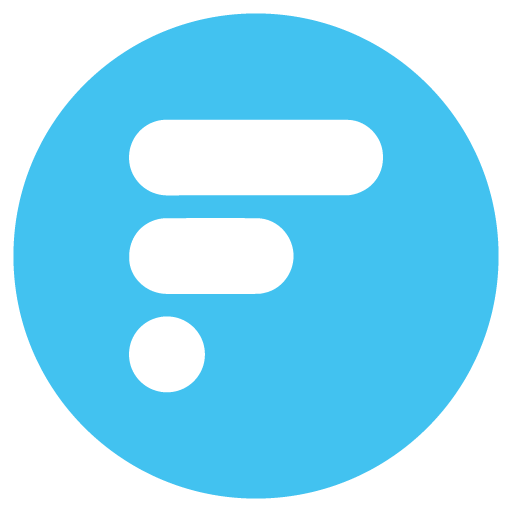

The 90% of users on social communities are still lurkers. You are a potential source of information and the world needs also your knowledge, whether it is about economics, your favourite sports or simply a topic you know a lot. Foldesk helps you to contribute efficiently and surfacing your contributions suggests what is the best place for them.
In Foldesk the content does not remain steady and static but instead becomes alive through a process of autoproduction. Information indeed gets completed just with its development and evolution. Foldesk democratizes the contribution process and incentivizes users to build information together.
Contents are organized in a unique and coherent interface. Explore and follow other topics and keep updated with the latest contributions. You will discover much more than you can imagine.